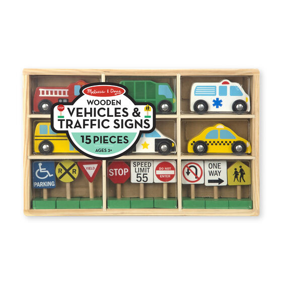
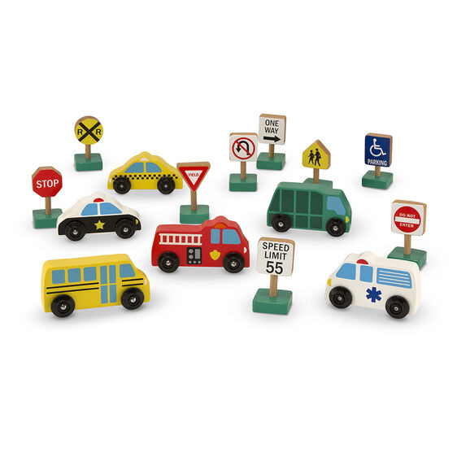

Available
Wooden Traffic Signs and Vehicles
Vehicles
R52515-piece wooden set of vehicles and signs Scaled to fit popular wooden train tracks. Play-and-learn activities recommend skill-building play ideas. All pieces store in a compartmentalized wooden box. Great for motor skills, color and shape recognition, and imaginative play Product: 8
Enquire about this product
Wooden Traffic Signs and Vehicles at Kids Corner KZN
Wooden Traffic Signs and Vehicles is part of our Vehicles collection. Kids Corner KZN stocks toys for learning, pretend play, creative play, gifting and everyday childhood discovery in South Africa.
Browse more Vehicles toys